Installing OpenSWOS
From nothing to playing, one step at a time. It takes about five minutes.
1What you need
Your own copy of Sensible World of Soccer. OpenSWOS is a new engine for the game, but the game's graphics, music, sound and teams are still owned by their makers, so they can't come with OpenSWOS. The setup makes them from your copy instead.
| Your copy | Where to get it |
|---|---|
| The PC version (easiest) | Buy Sensible World of Soccer 96/97 on GOG and install it. The PC CD version works too. |
| The Amiga version | Any of: the two SWOS 96/97 floppies as disk images (.adf); a hard disk image with the game on it (.hdf, e.g. ASWOS's swos.hdf); a WHDLoad install (.lha); or a .zip of any of these. sensiblesoccer.de's 24/25 season (swos2425.hdf or the WHDLoad .lha) works too. |
- For the game on a computer, a phone or a handheld, one of the two is enough. With both, you get the Amiga's music, sound and loading screens as well.
- For the Amiga version of OpenSWOS, you need both: the Amiga version for the game's own files, the PC version for its AGA pitches and pictures.
You don't have to remember any of this: the setup asks, gives you the links, and finds what you download.
You also need a Windows PC, a Mac or a Linux PC to run the setup on, even if you play on a phone, a handheld or an Amiga: it makes the game's data there, then copies it over.
Three extras are optional: World 2026-27 (today's clubs and players, below), the Atari Jaguar cartridge image (for the Jaguar's players) and a SWOS 2020 install (for its pitches).
2Download
Get OpenSWOS from baker76.itch.io/openswos. That page and openswos.net are the only official places to get it: OpenSWOS is free, and never asks you to pay or sign up anywhere else.
First, the game and the setup for the computer you run the setup on:
| Your computer | Download |
|---|---|
| Windows (10 or later) | SWOS-Setup.exe, the installer |
| Mac (Apple silicon or Intel) | SWOS-macOS-app.zip |
| Linux (PC or Raspberry Pi) | SWOS-portable.zip, and OpenSWOS-Setup.zip for the setup |
Then, if you play somewhere else as well:
| You play on | Also download |
|---|---|
| Android (8.0 or later) | OpenSWOS-Android.apk, on the phone |
| iPhone or iPad (iOS 15 or later) | OpenSWOS-iOS.ipa |
| A handheld with PortMaster (R36S, Anbernic, TrimUI, ...) | nothing: the setup has OpenSWOS for PortMaster in it |
| Amiga (A1200/A4000 or an emulator) | OpenSWOS-Setup.zip: it has the Amiga program in it. Run the setup from there. |
3Install OpenSWOS on your computer
Windows
- Run
SWOS-Setup.exe.- If Windows says "Windows protected your PC", click More info, then Run anyway. OpenSWOS isn't signed by Microsoft, which is why it asks.
- Click Next through the installer.
- On the last page, leave "Set up the game data from your copy of Sensible World of Soccer" ticked and click Finish. OpenSWOS Setup opens: go to step 4.
Later, you can open the setup again from the Start menu: OpenSWOS → OpenSWOS Setup.
Mac
- Double-click
SWOS-macOS-app.zip. You get an OpenSWOS folder holding SWOS.app and OpenSWOS Setup.app. - Drag the OpenSWOS folder to Applications (or anywhere you like).
- Open OpenSWOS Setup.app. The first time, right-click it (or Control-click) and choose Open, then Open again. OpenSWOS isn't signed by Apple, so a plain double-click is refused the first time. Then go to step 4.
Do the same right-click → Open the first time you start SWOS.app.
Linux
- Unzip
SWOS-portable.zipinto a folder of its own, e.g.~/Games/OpenSWOS. - Unzip
OpenSWOS-Setup.zipanywhere, and runLinux/openswos-setupfrom it. Go to step 4.
Which game file to run: SWOS.x86_64 on a normal 64-bit PC,
SWOS.aarch64 on a 64-bit Raspberry Pi (Pi 4/5),
SWOS.armhf on a 32-bit Pi. You need a Linux from 2021 or newer
(Ubuntu 21.10, Debian 12, Fedora 35 or later).
For an Amiga, unzip OpenSWOS-Setup.zip and run the
setup for your computer from it: Windows\openswos-setup.exe,
macOS/OpenSWOS Setup.app or Linux/openswos-setup.
4Run OpenSWOS Setup
The setup goes one screen at a time. Next goes on, Back goes back, Home returns to the first screen, and the dots at the bottom show how far you are. The flag at the top changes the setup's language (English, Deutsch, Français, Español, Italiano, Nederlands).
Where do you want to play? Tick everywhere you'll play: This computer, a Phone or tablet, a Handheld, an Amiga (a SWOS drawer) or an Amiga with WHDLoad. Tick the extras you want too. The screens that follow are only the ones you need.
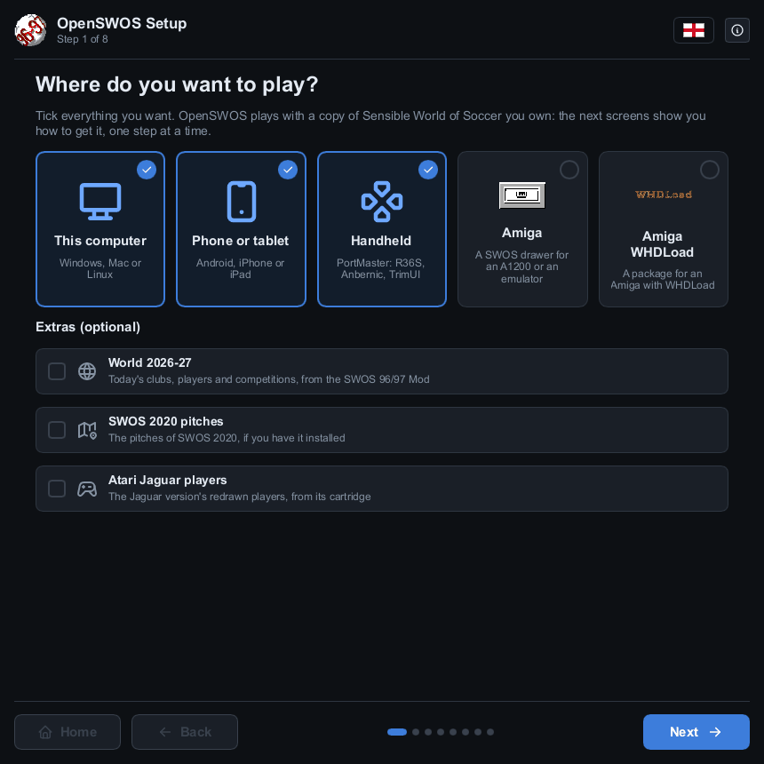
Which copy of the game do you have? The PC game, the Amiga version, or both. Not sure? Pick the PC game: it's the one you can buy today. (For an Amiga you need both, so this screen is skipped.)
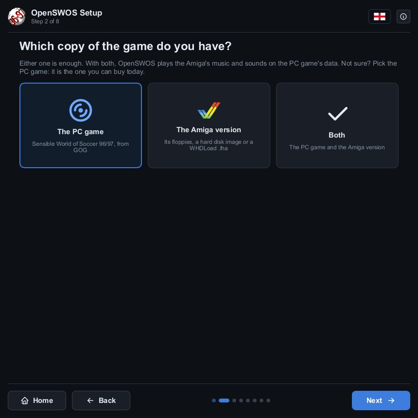
Get the game. Each part has a screen with the links to get it. You don't have to look for the files afterwards:
- What you download is found by itself. The setup watches your
Downloads folder: a disk image, hard disk image, WHDLoad
.lhaor.zipyou download turns up a moment after the download finishes. - The GOG game is found by itself once it's installed with GOG's installer or GOG Galaxy.
- Already have it somewhere? Drag the file or folder onto the window, or click Search a folder… and pick a folder it's in: the setup looks through that folder and every folder inside it. Choose another… picks a file or folder by hand. Start over forgets every copy the setup has found.
When it has it, the screen turns green and says Found it:
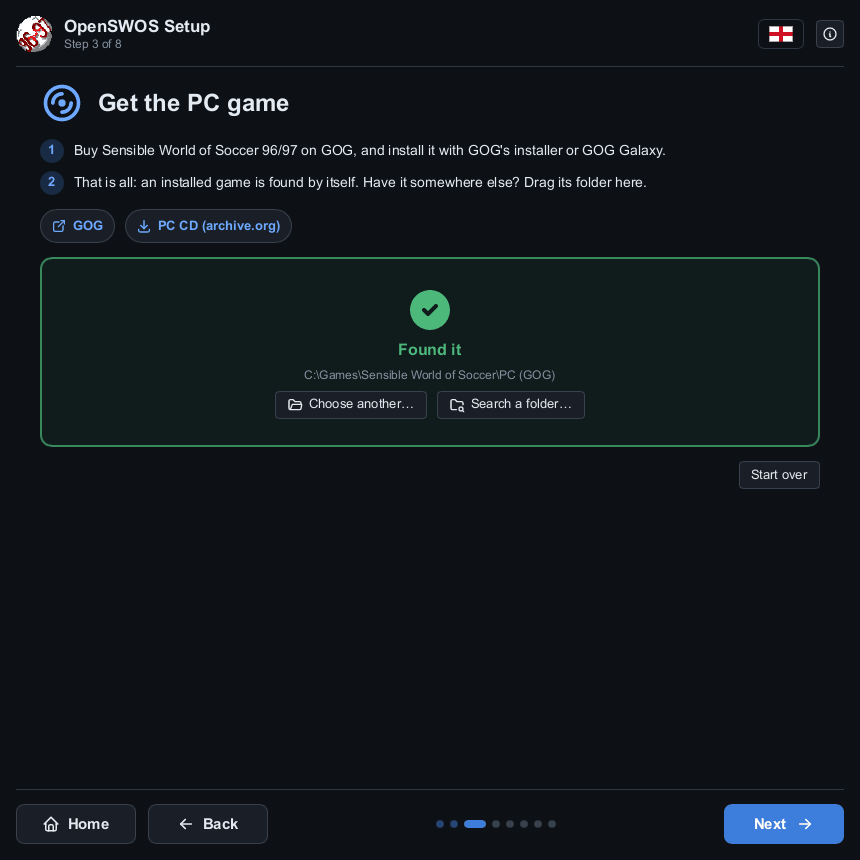
For the Amiga version it also says which season your copy is. The 96/97 release is the one the game was made from; a later season (like sensiblesoccer.de's 24/25) works too, but online OpenSWOS plays 96/97's teams, so with the PC game those come from it. A copy that can't be used (a damaged download, or a different release) gets a red mark and says why.
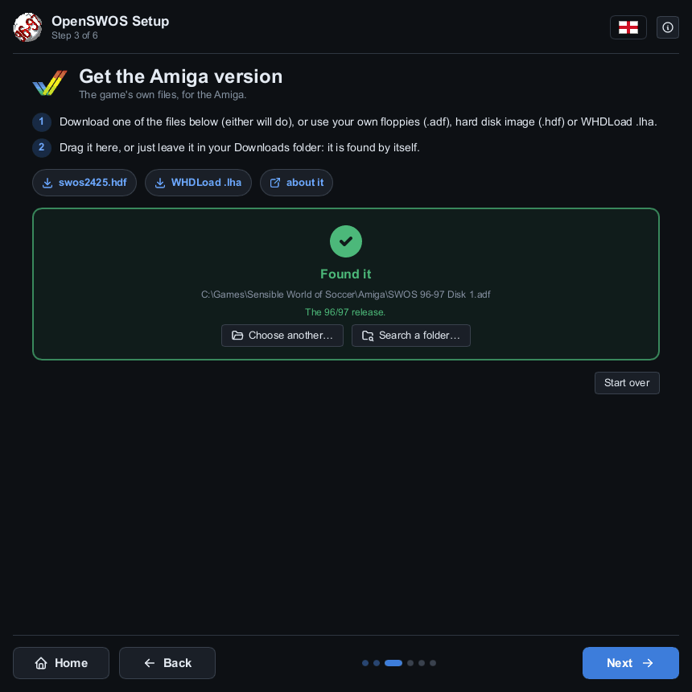
Game options. How the game looks and plays the first time you start it: the gameplay, graphics, sound, music, screen, language and more. Not sure? Leave them: you can change any of them in the game's OPTIONS later.
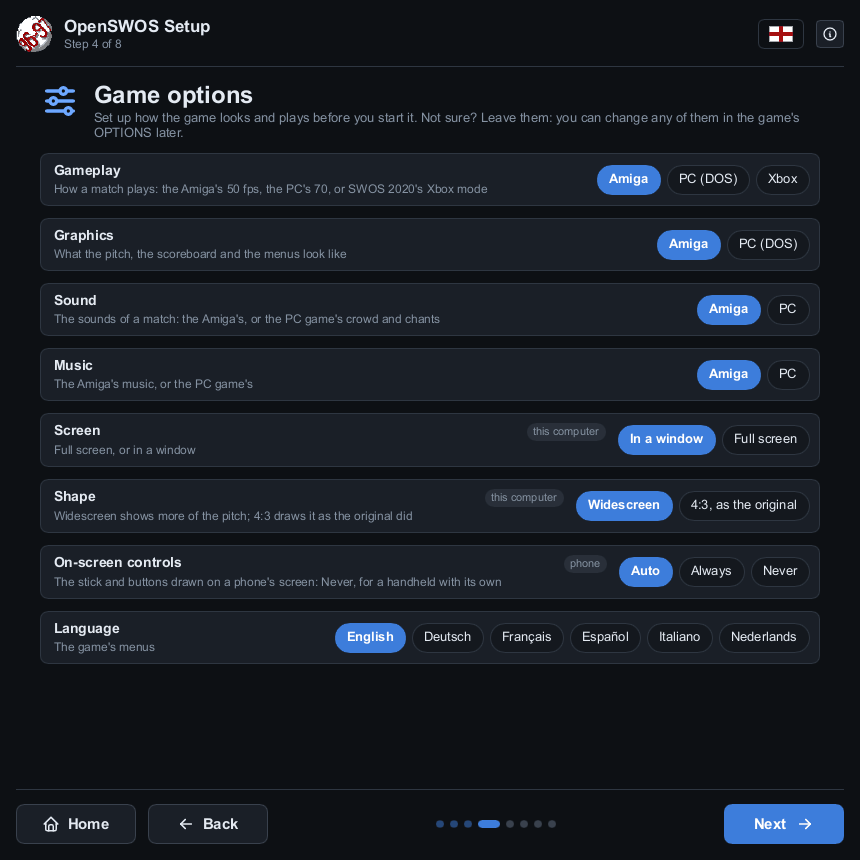
Install the game's data. Click Install. It takes a few seconds. The folder at the top is where the game reads its data from: leave it as it is. Details below it shows what will be made (parts you have nothing for are marked skipped: the game plays without them) and the log.
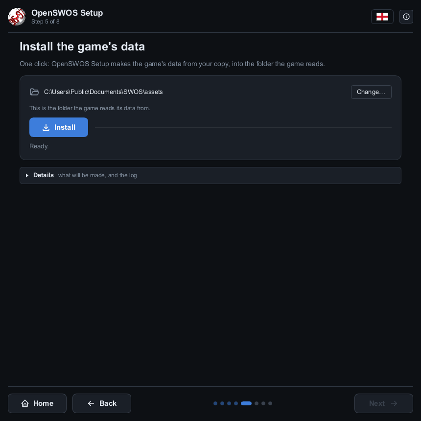
Then, for each other place you ticked:
Phone or tablet
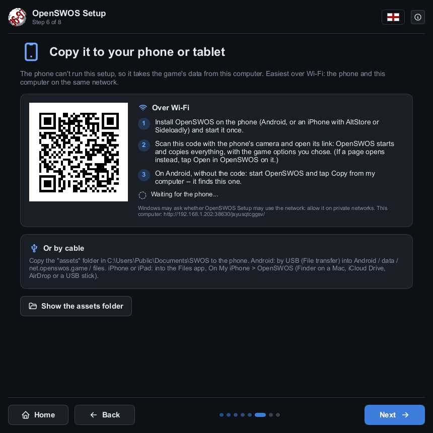
- Install the app on the phone.
- Android: open
OpenSWOS-Android.apkon the phone (download it there, or copy it over) and allow installing it when Android asks: it isn't from the Play Store. - iPhone or iPad: iOS installs apps only from the App Store, so
OpenSWOS-iOS.ipagoes on with a sideloading tool, AltStore or Sideloadly, which signs it with your own Apple ID (with a free Apple ID it has to be refreshed every 7 days; the tool does that for you).
- Android: open
- Start OpenSWOS on the phone once. It says the game's data comes from OpenSWOS Setup.
- Scan the QR code on the setup's screen with the phone's camera and open its
link. OpenSWOS starts and copies everything over Wi-Fi, with the game options you chose. If a
web page opens instead, tap Open in OpenSWOS on it. The phone and the computer
must be on the same network.
- On Android you can skip the code: tap Copy from my computer in OpenSWOS, and it finds the setup by itself.
- Windows may ask whether OpenSWOS Setup may use the network: allow it on private networks. An iPhone asks whether OpenSWOS may find devices on your local network: tap OK.
Or by cable: copy the assets folder
(Show the assets folder opens it) to the phone. Android: by USB (File transfer)
into Android/data/net.openswos.game/files. iPhone or iPad: into the Files app,
On My iPhone → OpenSWOS (Finder on a Mac, iCloud Drive, AirDrop or a USB stick).
Handheld
For a Linux handheld with PortMaster (most firmwares have it: ArkOS, ROCKNIX, Knulli, AmberELEC, muOS). No PortMaster yet? Install it on the handheld first.
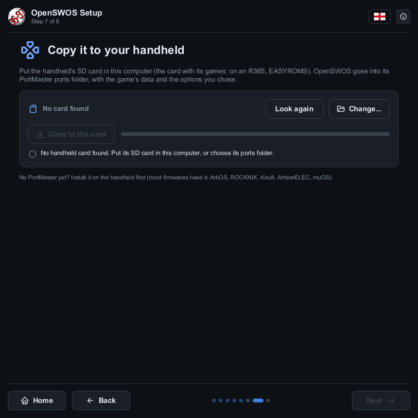
- Put the handheld's SD card in the computer (on an R36S, the card with its games, EASYROMS). The setup finds it; if it doesn't, click Change… and pick its ports folder.
- Click Copy to the card. OpenSWOS goes into PortMaster's ports folder, with the game's data and the options you chose.
The port is also on the downloads page as swos.zip,
for PortMaster on its own.
Amiga
You need an AGA Amiga with a 68020 or better (an A1200 or A4000, or an emulator set up as one), with a hard drive, Workbench and 8 MB of fast memory.
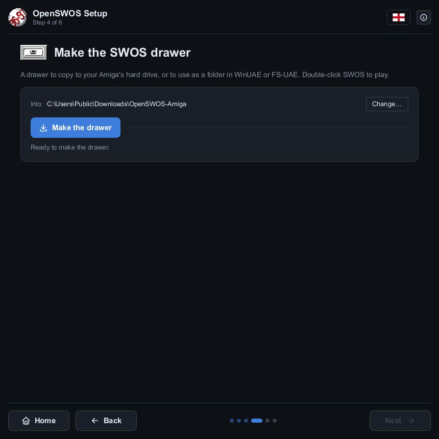
- SWOS drawer: click Make the drawer. Copy the drawer to your Amiga's hard drive (or use it as a folder WinUAE or FS-UAE treats as a hard drive). Double-click SWOS in it to play.
- WHDLoad package: click Make the package. You get
OpenSWOSAGA-WHDL.lha, for an Amiga with WHDLoad installed. Unpack it on the Amiga, open the OpenSWOSAGA-NE drawer and double-click OpenSWOS. No Kickstart image is needed.
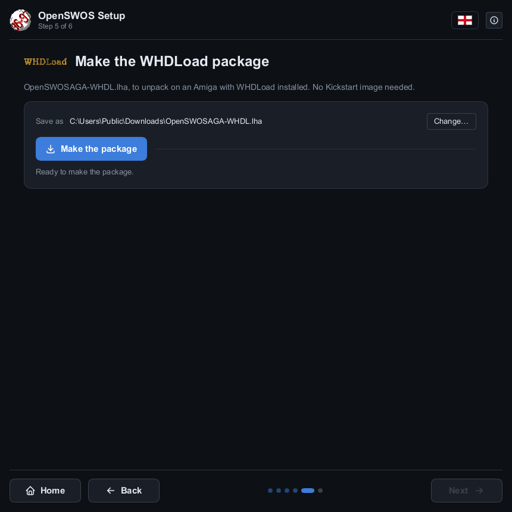
Both go to your Downloads folder unless you click Change…. If
the button stays grey, the line under it says what's missing: usually the PC version (the Amiga
version of OpenSWOS needs both), or the Amiga program, if you're not running the setup from
OpenSWOS-Setup.zip.
All done. The last screen says where to start the game. Play OpenSWOS starts it on this computer.
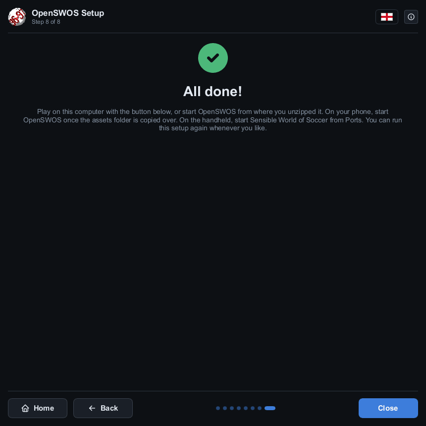
You only need to do this once: OpenSWOS Setup remembers where your copy of the game is. If a new version of OpenSWOS makes some of the data differently, the game tells you when it starts: open OpenSWOS Setup, and on its install screen click Update.
The screenshots are from Windows; the setup looks the same on a Mac and on Linux.
World 2026-27 (optional)
World 2026-27 is today's football: the clubs, players and competitions of the 2026-27 season, from the SWOS 96/97 Mod by Davide Lorigliola. It's a download of its own, and the game plays 96/97 unless you ask for it.
- Get it. Tick World 2026-27 under Extras on the setup's first screen. Its screen has the link, OpenSWOS-World-2627.zip: download it, and the setup finds it by itself (or drag it onto the window).
- Install it. It goes in with the rest when you click Install (or Update).
- Turn it on. In the setup's Game options, set
World to 2026-27. Or later, in the game:
OPTIONS on the main menu, then WORLD. The game plays the new
world from the next time it starts, so close it and start it again. (It's
world=2627under[general]inSWOS.ini, if you'd rather set it there.) A career or competition you saved is always played in the world it was started in.
- On an Amiga, tick Play World 2026-27 (its clubs and players) instead of 96/97 on the drawer's or the package's screen before making it.
- On a phone or a handheld, copy the game over again after installing the world (it's in the game's data), and choose it in OPTIONS → WORLD.
- The world's data is its authors' (credits).
5Play
- Windows: start OpenSWOS from the Start menu (or the desktop, if you ticked that in the installer).
- Mac: open SWOS.app (right-click → Open the first time).
- Linux: run
SWOS.x86_64(or the one for your Pi) from the folder you unzipped. - Android, iPhone and iPad: tap OpenSWOS. The stick (left) and FIRE (right) are on the screen, with PAUSE and ESC above FIRE; a Bluetooth controller works too.
- Handheld: start Sensible World of Soccer from Ports.
- Amiga: double-click SWOS in its drawer, or with WHDLoad, OpenSWOS in the OpenSWOSAGA-NE drawer. Under WHDLoad, Del quits back to Workbench.
Menus use the arrow keys and Enter (or a gamepad). In a match, the arrow keys move and Ctrl, Space or Enter kick. All the keys and the gamepad buttons are in the controls guide.
Playing online: choose MULTIPLAYER on the main menu. Both players need the same version of OpenSWOS.
If something goes wrong
The setup doesn't find my game.
Drag it onto the window, or click Search a folder… and pick the folder it's in, or Choose another… and pick it by hand:
- PC game: the folder with
SPRITE.DATand aDATAfolder in it. GOG puts it where you chose when installing, usually underC:\GOG Gamesor underGOG Galaxy\Gamesin Program Files. - Amiga version: the
.adf,.hdf,.lhaor.zipfile itself. For floppies, add both disks: the setup tells them apart by what's on them, not by their names.
The Amiga version has a red mark.
It says why. "…its blocks on the disk are damaged": that download is broken, try
another (sensiblesoccer.de's swos2425.hdf and WHDLoad .lha are both
good). "…is not the 96/97 release or an update of it": it's an older SWOS (for example
the original 1994 floppies), which OpenSWOS can't use.
The phone doesn't copy anything after scanning the code.
Check the phone and the computer are on the same Wi-Fi (not a guest network), and that
Windows was allowed to let OpenSWOS Setup use private networks. On an iPhone, check
Settings → OpenSWOS → Local Network is on. Close OpenSWOS on the phone (swipe
it away) and scan again. Or copy the assets folder by cable, as above.
The handheld card isn't found.
Click Look again once the card is in, or Change… and pick
the card's ports folder yourself.
The game won't start, or starts without graphics or sound.
The game data usually isn't installed. Run OpenSWOS Setup again and check its install screen
says The game's data is installed. The game writes what happened to
SWOS.log, in the folder below.
Windows or the Mac won't let me open it.
OpenSWOS isn't signed. On Windows click More info → Run anyway; on a Mac right-click the app and choose Open.
My gamepad doesn't work.
See Gamepad not detected? in the controls guide.
Where are my saves and settings?
| Computer | Folder |
|---|---|
| Windows | Documents\SWOS |
| Mac | ~/Library/Application Support/SWOS (in Finder: Go → Go to Folder…) |
| Linux | ~/.swos |
| Amiga | the save folder inside the SWOS drawer (with WHDLoad: OpenSWOSAGA-NE/data/save) |
Saves are in save, the settings in SWOS.ini
(settings guide),
the game data from the setup in assets. Reinstalling or updating OpenSWOS never
touches them.
Still stuck, or found a bug?
Please report it on github.com/benbaker76/OpenSWOS/issues:
say which version you have (the bottom line of the main menu) and what happened, and attach
your SWOS.log.